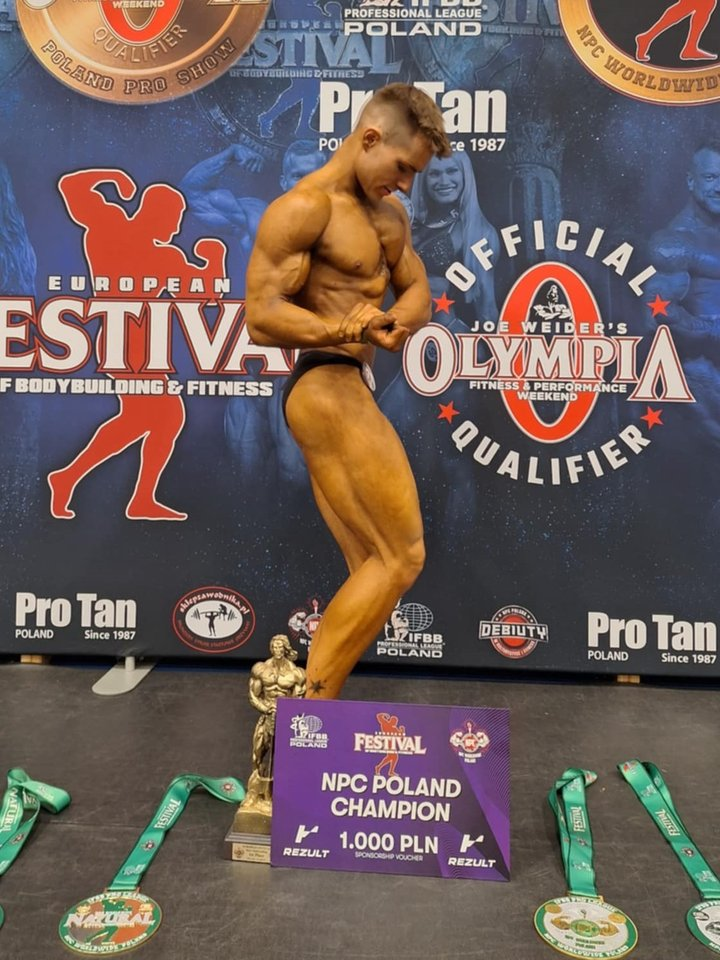
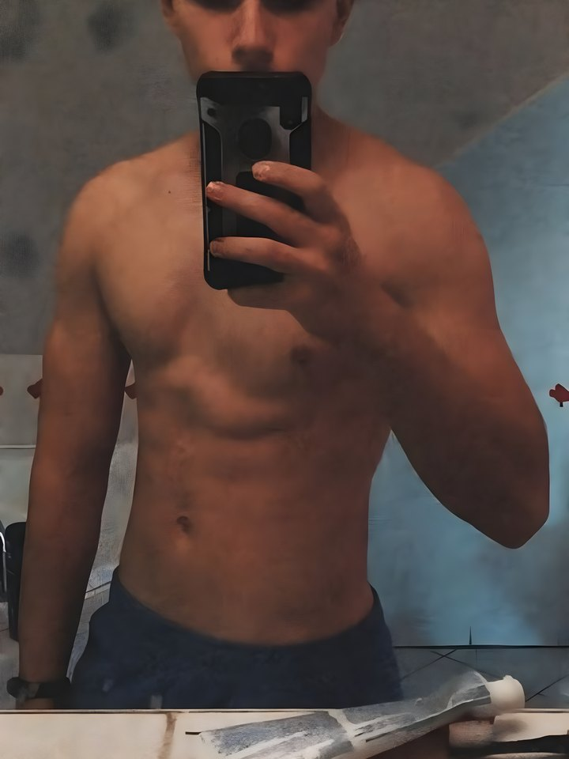
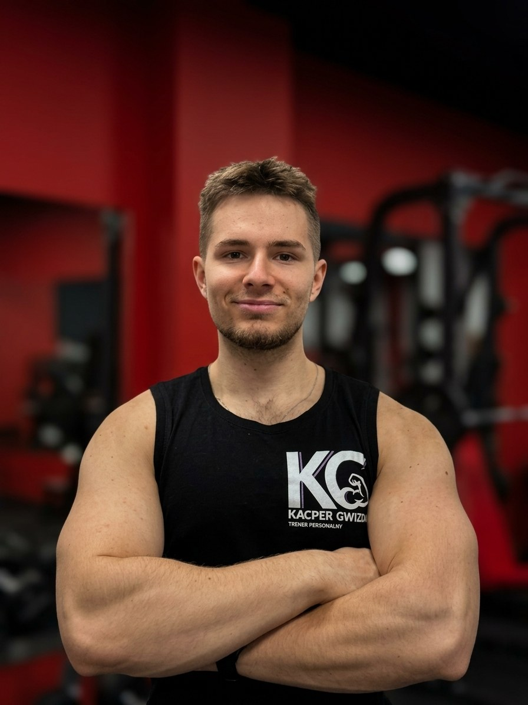
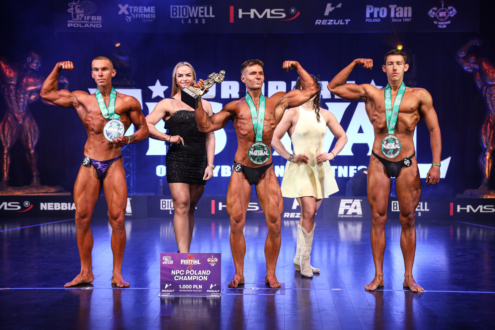
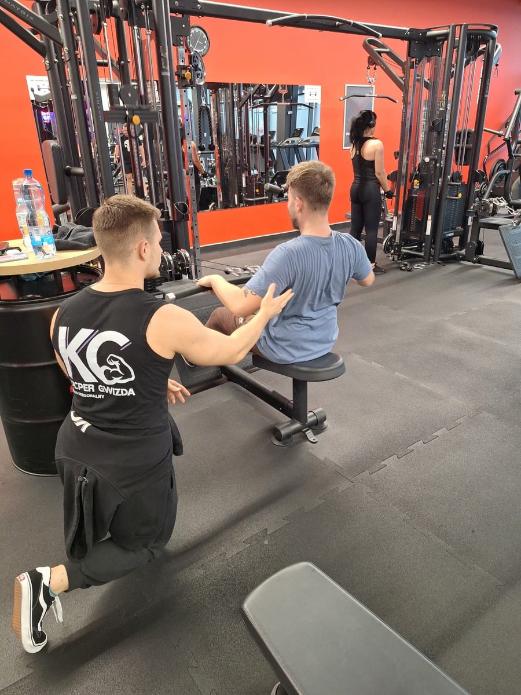
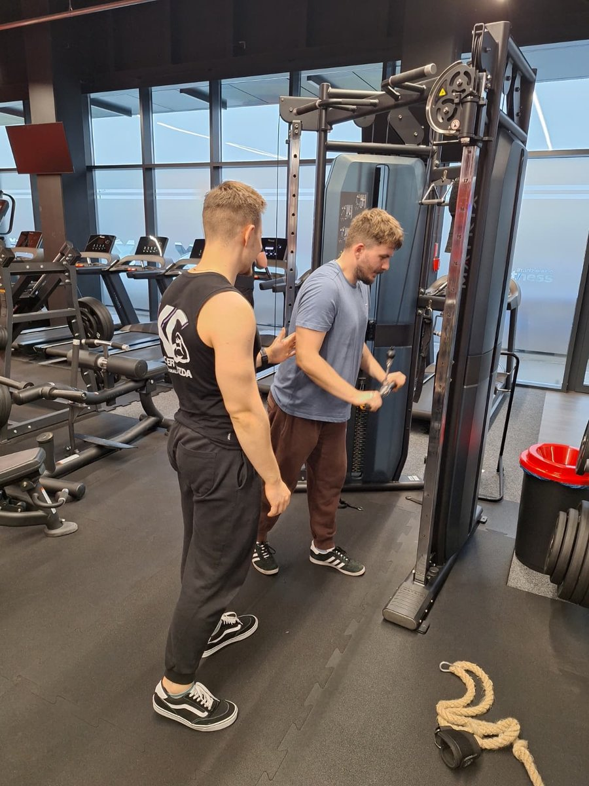

Zwykły chudy chłopak z bolącym kręgosłupem: tak wyglądał mój start. Dlatego tak dobrze rozumiem ludzi, którzy boją się pierwszego kroku.

Bez wygładzania, razem z wpadkami. Wszystko, czego uczę, najpierw przerobiłem na sobie.
Trenowałem totalnie sam, z filmików, bardzo nieumiejętnie. Mało mięśni, mało wiedzy, mnóstwo błędów. Sylwetka długo stała w miejscu, ale nauczyłem się najważniejszego: jak trenować, żeby się nie wyniszczać.
Okazało się, że mój kręgosłup nie jest w dobrej kondycji: skolioza, dyskopatia, stenoza, ciągłe bóle i drętwienie stóp. Były chwile zwątpienia, ale się nie poddałem. Zacząłem tak dobierać ćwiczenia, żeby wzmacniały plecy, a nie je dobijały. Trzymam się tego do dziś.
Długa, spokojna redukcja przywróciła mi równowagę. Wtedy zrozumiałem, że to daje mi szczęście i że chcę tak pracować. Zacząłem kursy trenerskie i dietetyczne.
Miałem już wiedzę, a i tak przez niecierpliwość przytyłem za szybko i za dużo, a potem długo to zrzucałem. Dziś pilnuję, żeby moi podopieczni nie płacili za te same błędy.
Pierwsze zawody w federacji NPC Natural i od razu 1. miejsce w kulturystyce juniorów, dwa razy 2. miejsce w Classic Physique i 4. miejsce w kulturystyce novice.
Online prowadzę ludzi od końcówki 2023 roku. Na sali, po krótkim epizodzie w 2025, pracuję cały 2026 rok, tak intensywnie, że przerobiłem tyle godzin i podopiecznych, co niejeden trener w pięć lat.

NPC Natural, maj 2025. Nie każdy musi zostać kulturystą, ale każdy może poczuć się świetnie we własnej skórze. To, czego nauczyłem się po drodze, przekazuję podopiecznym.
Nie mam dyplomu AWF-u i nie udaję, że mam. Uczyłem się na żywym organizmie: najpierw swoim, potem przez ponad 2000 godzin z podopiecznymi. Do tego kursy online i szkolenia na żywo, ostatnio z diagnostyki wad postawy.
Nie szukam „goryli” ani sportowców. Najczęściej trafiają do mnie osoby po 10 godzinach w pracy, które nigdy nie ćwiczyły i panicznie boją się siłowni. Tu nikt nikogo nie ocenia. Przychodzisz zdjąć z siebie stres, a nie dołożyć nowy.
Tabelka w Excelu nie powie Ci, czemu zajadasz stres albo czemu nie chce Ci się przyjść. Szukamy przyczyny razem, a Ty dostajesz wsparcie człowieka, nie tylko rozpiskę. Kiedy coś nie idzie, to zwykle nie dlatego, że jesteś leniwy/-a.
Naprawdę mi na Tobie zależy, dlatego nie będę głaskać po główce, gdy odpuszczasz. Wymagam działania, ale jak przyjaciel: w kryzysie podam rękę i pomogę wrócić na tory.
Prowadziłem ludzi, którzy startowali ze skrajnego zaniedbania, i sam wygrałem zawody sylwetkowe. Chcesz wejść po schodach bez zadyszki albo stanąć na scenie? Wiem, jak Cię tam doprowadzić.


Zostaw numer, a oddzwonię i umówimy bezpłatną konsultację w Chełmży. Mieszkasz dalej? Zacznij online.